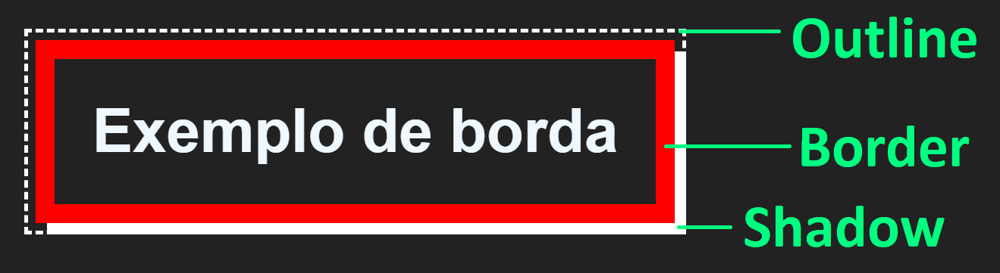
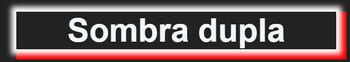

Bordas e Sombras
Estudamos sobre bordas algumas vezes durante este curso, sempre lembrando que retornaríamos ao assunto, pois bem, agora veremos mais a fundo como as bordas funcionam e a diferença entre borda, sombra e outline. Essa diferença é bem simples e você pode notá-la na imagem abaixo:
A borda ocupa um espaço chamado border-box que vimos no começo deste capítulo e que não compreende a margem do elemento, enquanto isso, a outline, ou linha externa, ocupa a margem do elemento, e pode ser rente a borda, substituí-la ou ter um espaço entre ambas chamado de offset.
Enquanto isso, a sombra ocupa o espaço exterior à content-box. Isso significa que mesmo que um elemento possua fundo transparente, a sombra não será vista inferior a ele, mas recortada pela caixa. Veja este exemplo:

Para aplicar um efeito de sombra a um texto, utilizamos sua própria propriedade que é text-shadow:
Bordas
Para criar bordas podemos atribuir os valores de estilo, espessura, cor e raio. Uma borda definida apenas com o estilo herdará a cor atual do elemento, e terá a espessura definida como média, mas podemos definir a cor personalizada da borda e seu estilo, além da espessura em pixels.
A propriedade border-style (estilo) é obrigatória para a criação de bordas.
Para conferir uma lista completa com os estilos de borda acesse:
developer.mozilla.org/en-US/docs/Web/CSS/border-style#values
Todas as propriedades podem ser atribuídas numa “declaração abreviada”, que é feita assim:
border: yellow 5px solid;
Acima estamos criando uma borda amarela, com 5 pixels de espessura e do estilo sólido.
As propriedades da borda podem ser definidas de forma individual:
border-color: yellow; border-style: dashed; border-width: 5px;
E é possível ainda definir bordas individuais para cada lado do elemento:
border-top: yellow 5px dotted; border-bottom: 3px solid; border-left: 3px outset; border-right: red inset;
No exemplo acima, as bordas individuais são declaradas utilizando abreviação, mas podemos ainda declarar cada propriedade para cada borda.
Color:
border-top-color: Cor da borda superior.
border-left-color: Cor da borda esquerda.
border-bottom-color: Cor da borda inferior.
border-right-color: Cor da borda direita.
Width:
border-top-width: Espessura da borda superior.
border-left-width: Espessura da borda esquerda.
border-bottom-width: Espessura da borda inferior.
border-right-width: Espessura da borda direita.
Style:
border-top-style: Estilo da borda superior.
border-left-style: Estilo da borda esquerda.
border-bottom-style: Estilo da borda inferior.
border-right-style: Estilo da borda direita.
Border Radius
A propriedade border-radius define o arredondamento dos cantos da borda, e pode ser definida em porcentagem ou em pixels:
div { border-radius: 5px; }
.minhaClasse { border-radius: 50%; }
Um valor de borda definido em porcentagem gerará uma borda circular em elementos com largura e altura iguais (quadrados), e uma borda elíptica em elementos com altura e largura diferentes (retangulares).
O raio pode ainda ser definido em bordas individuais, entretanto, nesse caso devemos definir duas bordas que representam um dos cantos do elemento:
border-top-left-radius
border-top-right-radius
border-bottom-left-radius
border-bottom-right-radius
Outline
A propriedade outline funciona exatamente da mesma maneira que a propriedade border, a diferença é que as duas podem estar presente simultaneamente num elemento, estando a borda dentro do espaço da caixa de borda, e a outline dentro da margem (fora da border-box). A outline pode ainda possuir um espaçamento entre a borda.
border: yellow 5px solid; outline: red 2px dashed; outline-offset: 5px;
Se o valor de offset for omitido, a linha externa ficará rente à borda. A outline não possui raio e o offset deve ser declarado à parte da declaração abreviada.
Veja o resultado do código anterior:
Border Image
A propriedade border-image permite definir uma imagem ou um gradiente para a borda.
border: 10px solid; border-image: linear-gradient(red, green) 1;
No exemplo acima estamos criando uma borda com gradiente, note que declaramos primeiro uma borda sem cor, em seguida definimos a cor com a propriedade border-image, atente para os seguintes detalhes:
1. A propriedade border-image só produzirá algum resultado se um estilo e uma espessura forem definidos para a borda (como no exemplo).
2. Se a propriedade color for definida, seja individualmente ou na declaração abreviada, antes da propriedade border-image, será substituída.
3. Se a propriedade color for definida depois (abaixo), da propriedade border-image, ela substituirá, portante border-image não produzirá efeito.
No exemplo anterior, note que definimos o gradiente em seguida passamos o valor 1, esse valor é referente ao slice, uma borda de imagem precisa pelo menos de um recurso (URL de imagem ou um gradiente) e de um valor de slice.
O valor de slice divide o fundo da borda em 8 partes, sendo quatro lados e quatro cantos e define como este fundo será recortado para se ajustar ao espaço da borda. O resultado produzido pela propriedade slice dependerá do tamanho do elemento, do dimensionamento da tela e do conteúdo utilizado na borda.
Para utilizar uma imagem de arquivo na borda, basta chamarmos a função url():
border: 20px solid;
border-image: url("minhaImagem.jpg") 1;
Após inserir uma imagem de borda a partir de uma URL, talvez seja necessário alterar o valor do slice para ajustar a imagem, esse valor dependerá do tamanho e das proporções da imagem.
Propriedades de Borda de Imagem
O atributo border-image possui algumas propriedades que nos dão maior controle sobre o resultado final:
border-image-outset: Define um espaço vazio entre a borda e o elemento.
border: 10px solid;
border-image:url("minhaImagem.jpg") 20;
border-image-outset: 20px;
No exemplo acima, um espaço vazio de 10px será visível entre a borda e o elemento, isso pois a borda já ocupa 10px.
border-image-repeat: Define o ajuste da imagem dentro do espaço da borda, os valores podem ser repeat, round, space e stretch. Vejamos os exemplos:
A imagem é repetida com tamanho e proporções originais para preencher a borda:
border-image-repeat: repeat;
A imagem é ampliada e repetida para preencher a borda mantendo as proporções originais:
border-image-repeat: round;
A imagem é esticada para preencher a borda:
border-image-repeat: space;
A imagem é esticada para preencher a borda (mesmo que space):
border-image-repeat: stretch;
Box-Shadow
A sombra criada com a propriedade box-shadow ocupa a parte exterior à caixa de borda de acordo com os valores passados e deve ser definida com uma declaração abreviada assim:
box-shadow: 5px 10px 15px 20px red;
Os valores são declarados na seguinte ordem:
Deslocamento horizontal: Desloca a sombra para a esquerda, ou para direita ao passarmos valores negativos.
Deslocamento vertical: Desloca a sombra para baixo, ou para cima em valores negativos.
Desfoque: Produz efeito de névoa na borda da sombra, se definido como 0 a sombra terá aspecto nítido, idêntico à forma do elemento.
Espalhamento: Aumenta o tamanho da sombra em relação ao elemento.
Cor: Define a cor da sombra, se omitido a sombra herda a cor atual (definida no elemento, na classe etc.).
O valor do espalhamento pode ser omitido, nesse caso a sombra extrapolará apenas a quantidade definida no desfoque:
box-shadow: 5px 10px 15px red;
Podemos ainda deixar a sombra menos aparente atribuindo à cor certa quantidade de transparência:
box-shadow: 5px 10px 15px #F00A;
Podemos aplicar quantas sombras desejarmos a um elemento apenas separando suas declarações por vírgula:
box-shadow: 0px 0px 5px 5px white, 5px 5px 0px 5px red;
Text-Shadow
Como dito, a box-shadow é criada apenas no espaço exterior à margem sendo recortada pela caixa, para aplicar uma sombra a um texto que acompanhe seu contorno, devemos utilizar a propriedade text-shadow:
text-shadow: 0px 0px 5px yellow;
A propriedade text-shadow cria uma sombra que não é recortada pelo elemento, se o texto for transparente, será possível ver a sombra por baixo dele, veja este exemplo:
text-shadow: 1px 1px 0px cyan, -1px -1px 0px magenta; color: #FFF7;
Acima temos um texto (de cor preta) com duas sombras definidas sem desfoque, com deslocamentos e cores diferentes (uma sombra magenta e uma sombra ciano), e para vê-las deixamos o texto com 50% de transparência, veja o resultado: